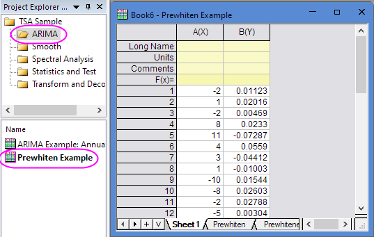
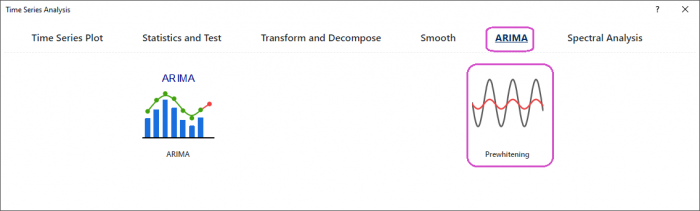
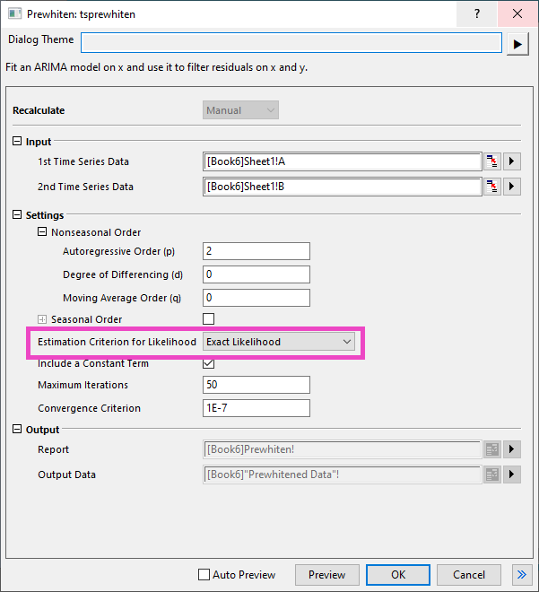
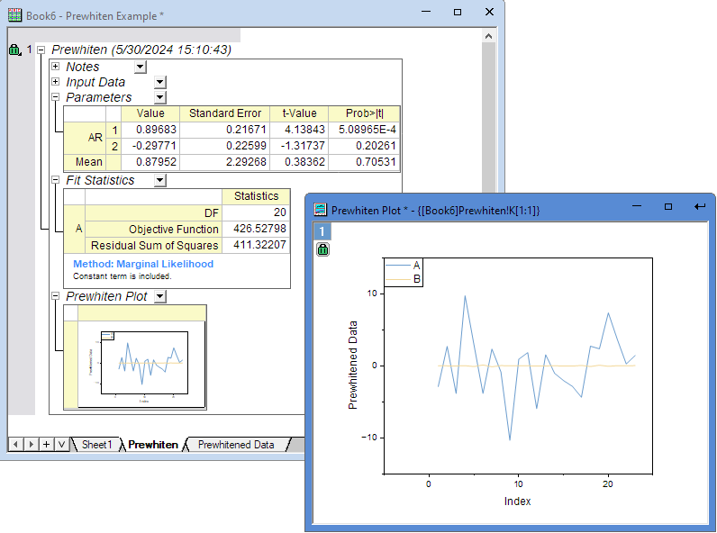

Tutorial for Prewhitening Tool
TSA-ARIMA-Prewhitening-Tutorial
Summary
This Prewhitening tool is supported in the Time Series Analysis App. It is used to fit an ARIMA model on x and use it to filter residuals on x and y.
Tutorial
This tutorial uses App’s built-in sample project. To open this sample OPJU file:
- Right click the Time Series Analysis App icon
 in the Apps Gallery and choose Show Samples Folder.
in the Apps Gallery and choose Show Samples Folder.
- A folder will open. Drag-and-drop the project file TSA Sample.opju into Origin.
Prewhitening Tool
- Expand Project Explorer docked on the left. Select folder ARIMA . The Book6 contains the sample dataset.

- Highlight Column A and B, and then click the Time Series Analysis App icon in the Apps Gallery.
- In the dialog, select ARIMA tab and Prewhitening tool.

- Select Exact Likelihood under Estimation Criterion for Likelihood drop-down list. Then click OK button.

- Then you will get the report with Prewhiten Plot
